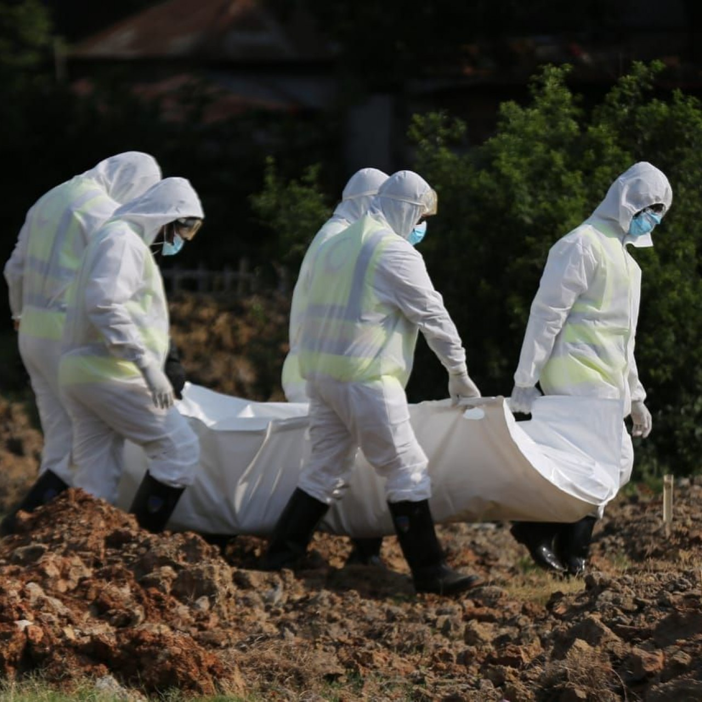

Personal protective equipment is special equipment you wear to create a barrier between you and germs. This
barrier reduces the chance of touching, being exposed to, and spreading germs.The most common problems
associated with using PPE kits was excessive sweating (100%), fogging of goggles, spectacles, or face
shields (88%), suffocation (83%), breathlessness (61%), fatigue (75%), headache due to prolonged use (28%),
and pressure marks on the skin at one or more areas on repeated use (19%). Occasional problems reported were
skin allergy/dermatitis caused by the synthetic material of the PPE kit, face shield impinging onto the neck
during intubation, and nasal pain, pain at the root of the pinna, and slipperiness of shoe covers. Various
ways and means have been employed by the HCWs to actively address and solve these problems
Comes Under Depression
The results of 422 responses revealed a 63.5% and 45% prevalence of symptoms of depression and stress,
respectively, among frontline COVID-19 doctors. Postgraduate trainees constituted the majority (45.5%) of
the respondents. Moderately severe and severe depression was noted in 14.2% and 3.8% of the doctors,
respectively. Moderate and severe stress was noted in 37.4% and 7.6% of participants, respectively.
Multivariate regression analysis showed working ≥ 6 hours/day to be a significant risk factor for moderate
or severe perceived stress, while single relationship
status and working ≥ 6 hours/day significantly contributed to the development of moderate,
moderately severe, or severe depression.

Sacrificing Their Lives
As many as 776 doctors have succumbed to coronavirus infection during the second wave, according to data
available by the Indian Medical Association (IMA).According to the IMA COVID registry - state-wise Doctors
martyrs list, Bihar saw the maximum number of 115 deaths, followed by Delhi at 109, Uttar Pradesh 79, West
Bengal 62, Rajasthan 44, Jharkhand 39, and Andhra Pradesh 40.According to the IMA, 748 doctors died in the
first wave of the pandemic.
In southern states, Karnataka recorded 9 deaths of doctors, while Kerala witnessed 24 and Tamil Nadu 50.
Odisha recorded deaths of 34 doctors while Maharashtra witnessed 23 deaths of doctors.
A slight decrease in new COVID-19 cases was seen in the country on Friday with 51,667 more people testing
positive, said the Union health ministry. The cumulative caseload has now reached 3,01,34,445.
Doctors are Real Heroes
The current pandemic that the world is undergoing warrants that this is perhaps the most difficult time we
are ever going to face in our lives. It is even more difficult for the doctors who are working tirelessly to
ensure that all those that are infected are provided with proper medical facilities. Their contributions and
hard work deserve our gratitude each and every day.The year 2020-21 belongs to doctors and the healthcare
workers who are risking their lives to fight the lethal, invisible virus Covid-19. While India stays at home
to curb the spread of the pandemic; armed with masks, gloves, and protective gears, the medical community is
working tirelessly round the clock amid mounting pressure, fear of being infected, and harassment and
discrimination.
.jpg)